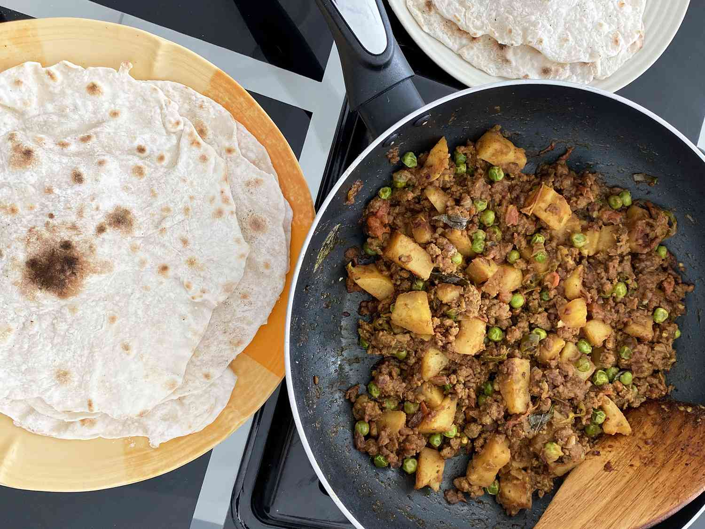

Keema Aloo (Ground Beef and Potatoes)

Description
This keema aloo curry is by far my favorite Indian recipe. Inspired by my
mom, who still makes this for me to this day. If you want to try something
a little different, I guarantee you will love this meal.
Ingredients
- 2 tablespoons extra-virgin olive oil
- 1 extra-large onion, chopped
- 2 tablespoons water (Optional)
- 2 pounds lean ground beef
- 4 cloves garlic, minced
- 2 tablespoons grated fresh ginger root
- 1 serrano chile pepper, finely chopped
- 2 teaspoons chopped fresh cilantro
- 1 tablespoon ground coriander
- 1 ½ teaspoons salt
- 1 ½ teaspoons ground cumin
- 1 teaspoon ground cayenne pepper
- 1 teaspoon ground turmeric
- 3 potatoes, peeled and diced
- 1 (28 ounce) can diced tomatoes
- 1 cup frozen green peas
- 1 teaspoon garam masala
Steps
-
Heat olive oil in a large saucepan over medium-high heat. Add onion;
cook and stir until soft and beginning to brown, about 12 minutes. If
browned bits of onion are stuck to the bottom of the pan, add water and
stir to loosen.
-
Stir ground beef, garlic, ginger, serrano chile, and cilantro into the
pan; cook and stir until beef is browned and crumbly, 10 to 15 minutes.
Reduce heat to medium-low. Stir in coriander, salt, cumin, cayenne
pepper, and turmeric; cook and stir until flavors blend, about 5
minutes. Add potatoes and tomatoes; cover and simmer until potatoes are
tender, about 15 minutes.
-
Stir in green peas and cook until sauce has slightly thickened and
flavors have blended, 10 to 15 minutes. Sprinkle garam masala over top,
cover, and let stand for 5 minutes before serving.